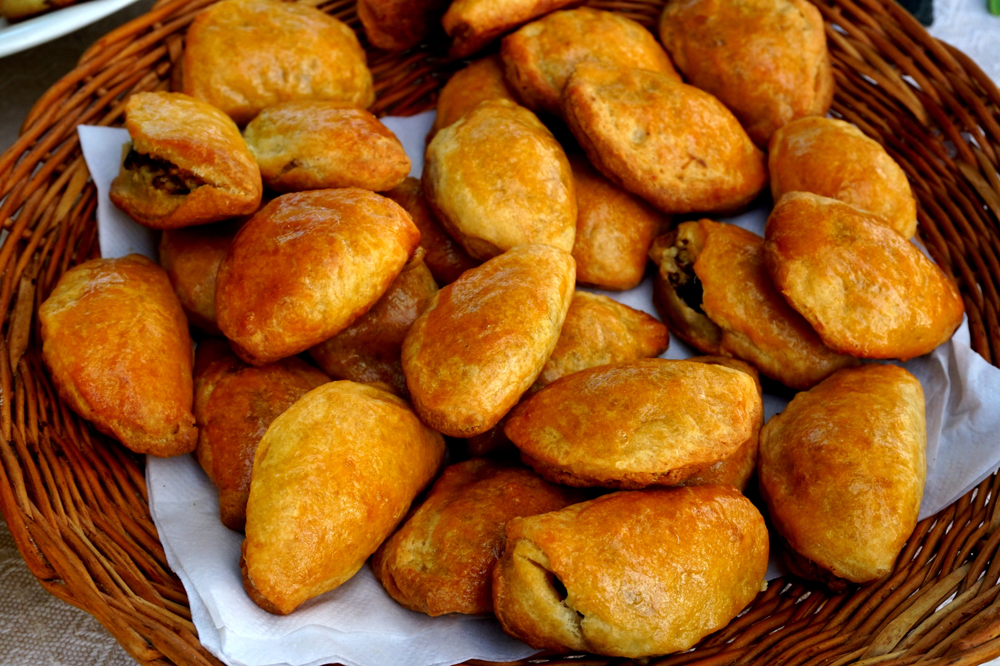

Latvian Piragi

Description
Piragi are bread rolls that are traditionally filled with bacon
and onions, and which originate from the Baltic state of Latvia.
They are usually made for special occasions and celebrations,
and baked in large batches.
Traditionally, the filling of a pīrāgs (singular of pīrāgi) consists
of finely diced bacon and onion, but Latvian families tend to have their
own recipe variations that are passed down from generation to generation.
Other common fillings include ground beef, ham, chicken and fish. The dough
is soft with a hint of butter flavor, so it is a perfect base for a host of fillings.
Ingredients
For the filling
- 1 onion,finely chopped
- 10 oz. bacon, finely diced
- Salt
- Pepper
For the dough
- 3/4 cup milk
- 4 tablespoons butter
- 2 teaspoons salt
- 2 tablespoons sugar
- 1 tablespoon active dry yeast
- 3 tablespoons warm water
- 1 egg,beaten
- 3 1/2 cups all-purpose flour
- 2 tablespoons sour cream
For the glaze
- 1 egg,beaten
- 2 teaspoons milk or water
- 1/4 teaspoon sugar
Directions
- Mix onions and bacon and season with pepper and salt
Dough
- Heat the milk. Pour into a bowl,then add butter and salt. Let it cool for 5 minutes.
- Dilute the yeast and sugar in ¼ cup (50ml) of warm water. When it starts to foam,
add it to the milk mixture. Then, add the beaten egg.
- Add the flour and the sour cream, and beat until obtaining a smooth dough.
Add the flour and the sour cream, and beat until obtaining a smooth dough.
- Cover the bowl and let the dough rest for 10 minutes. Turn the dough onto floured
surface. Knead lightly for about 5 minutes.
- Put the dough into a greased bowl. Cover bowl and let rise in a warm place for about
1 hour or until doubled in volume.
Buns (Piragi)
- Once the dough has risen, punch it down. Preheat oven to 400F/200C.
Prepare a floured surface for making the pīrāgi. Take meat filling out of fridge.
Mix together all the glaze ingredients.
- Cut off a large piece of the dough. On a floured surface, roll it into a rope
about 1½ inch (4cm) in diameter.Cut it into segments of about 1½ inch thick.
- Flatten each segment into a small oval or square. Put a teaspoonful of the filling on the top half.
Fold the dough over to the bottom part and seal by pinching the edges together.
- Place the finished buns, seams underneath, on a baking sheet lined with parchment paper.
- Let rise in a warm place, until the buns are almost doubled in volume, about 30 minutes. Brush them with the glaze.
- Bake in the preheated oven for about 15 minute or until golden brown.
- Let cool 15 minutes before serving.
- Enjoy1